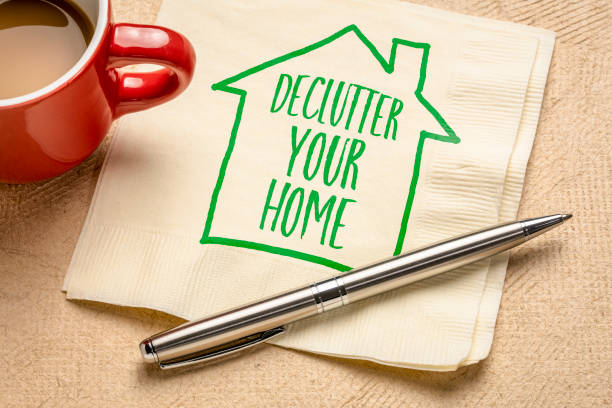

This project entails data cleaning and exploratory analysis of DonoDeclutter dataset, using pandas for data
wrangling and manipuation, numpy for creating arrays, seaborn and matplotlib for data visualization for better understanding of the dataset.


In this project, Object-oriented programming was used to create a budget tracker that helps users manage expenses and income with categories and transactions.
This project aims to analyze traffic accident data and identify trends and insights related to casualties, state-by-state total accident cases, mortality rate, their causes, and the percentage of the highest causating factor in Nigeria. The project leveraged the use of pivot tables, and power pivot, to measure the percentage cases, total cases of road accidents, number of people killed yearly, and periodical cases of the highest cause of accidents in Nigeria.

Donec eget ex magna. Interdum et malesuada fames ac ante ipsum primis in faucibus. Pellentesque venenatis dolor imperdiet dolor mattis sagittis magna etiam.